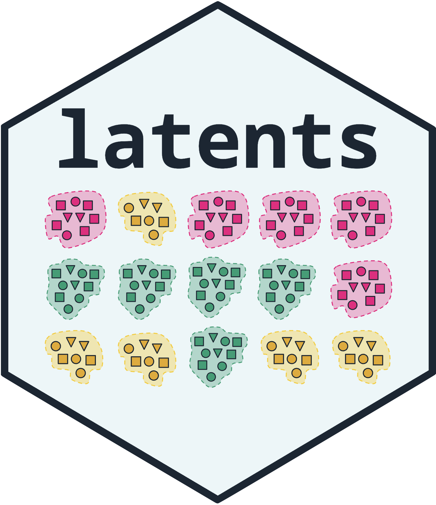

Tidy results of a growth mixture model
Source:R/growth-mixture-methods.R
get_results.latents_growth_mixture.RdEvery table of a mixture_regression() fit with random = is a base
data.frame with one row per observation unit of that table.
Usage
# S3 method for class 'latents_growth_mixture'
get_results(
x,
what = "coefficients",
level = 0.95,
vcov_type = NULL,
time = NULL,
data = NULL,
truth = NULL,
...
)
# S3 method for class 'latents_growth_mixture'
as.data.frame(
x,
row.names = NULL,
optional = FALSE,
what = "coefficients",
...
)
# S3 method for class 'latents_growth_mixture'
coef(object, ...)
# S3 method for class 'latents_growth_mixture'
vcov(object, type = NULL, ...)
# S3 method for class 'latents_growth_mixture'
confint(object, parm, level = 0.95, ...)
# S3 method for class 'latents_growth_mixture'
logLik(object, ...)
# S3 method for class 'latents_growth_mixture'
nobs(object, ...)Arguments
- x
A
latents_growth_mixturefit.- what
Which table:
"coefficients"(one row per class and term, with Wald statistics; shared terms have class"common"),"classes"(share with interval, expected and assigned persons, average posterior, residual standard deviation),"random"(per class: random-effect variances, standard deviations and correlations with intervals formed on the log and Fisher-z scales),"membership"(membership logits against class 1),"fit"(one row: log likelihood, information criteria with persons as the sample size, entropy, convergence),"assignments"(one row per person: modal class and posteriors),"random_effects"(one row per person: predicted random effects under the modal class),"trajectories"(one row per class and time point: the mean trajectory with a confidence band),"individual"(one row per observation: observed value, class trajectory and the person's own predicted curve),"starts"(one row per start),"recovery"(needsdataandtruth: the modal classes cross-tabulated against a known classification that is constant within persons, with counts and shares of each assigned class), or"all"(a named list of every table but"recovery"). A multilevel growth mixture (cluster) adds"group_classes"(one row per group class and class: the class probabilities within the group class, their standard errors without membership covariates, the group class's share of the clusters and its assigned clusters) and"clusters"(one row per cluster: persons, modal group class and posteriors); its"membership"table holds the group-class logits (against group class 1) and the class logits with one intercept per group class,"assignments"gains each person's cluster, and"fit"counts clusters inbic(persons inbic_persons).- level
Confidence level of the intervals.
- vcov_type
NULL(the stored type),"observed","robust"or"opg". A weighted fit allows"robust"only.- time
For
"trajectories"and"individual", the numeric variable to draw along; by default the first numeric variable ofrandom.- data, truth
For
"recovery": the data frame the model was fitted to and the name of its column holding the known classes.- ...
Unused.
- row.names, optional
Unused; for the generic.
- object
A
latents_growth_mixturefit.- type
As
vcov_type.- parm
Unused.
Examples
# \donttest{
fit <- mixture_regression(score ~ wave, growth_scores, n_classes = 3,
id = "student", class_level = "group",
random = "wave", random_covariance = "equal",
n_starts = 3, seed = 1)
get_results(fit, "classes")
#> Classes
#>
#> Class Share 95% CI Persons Avg. posterior Residual SD
#> ------- ----- ------------ ------- -------------- -----------
#> Class 1 0.37 [0.32, 0.43] 112 0.97 2.75
#> Class 2 0.33 [0.28, 0.39] 99 0.98 2.96
#> Class 3 0.30 [0.24, 0.36] 89 0.94 2.77
get_results(fit, "random")
#> Random effects (95% CI)
#>
#> Class Parameter Term Estimate 95% CI
#> ----------- ----------- ---------------- -------- --------------
#> All classes Variance Intercept 16.79 [13.41, 21.01]
#> All classes Variance wave 0.54 [ 0.40, 0.73]
#> All classes SD Intercept 4.10 [ 3.66, 4.58]
#> All classes SD wave 0.73 [ 0.63, 0.86]
#> All classes Correlation Intercept x wave -0.24 [-0.40, -0.07]
get_results(fit, "recovery", data = growth_scores, truth = "trajectory")
#> Recovery of a known classification
#>
#> Assigned trajectory Persons Share of assigned
#> -------- ---------- ------- -----------------
#> Class 1 improving 109 0.973
#> Class 2 improving 0 0.000
#> Class 3 improving 6 0.067
#> Class 1 stable 3 0.027
#> Class 2 stable 3 0.030
#> Class 3 stable 82 0.921
#> Class 1 declining 0 0.000
#> Class 2 declining 96 0.970
#> Class 3 declining 1 0.011
# }